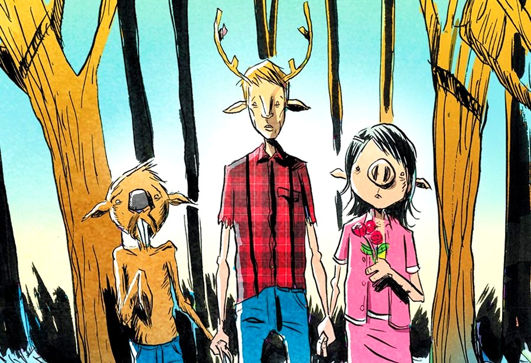
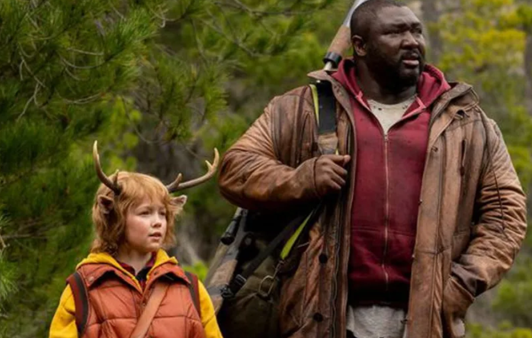
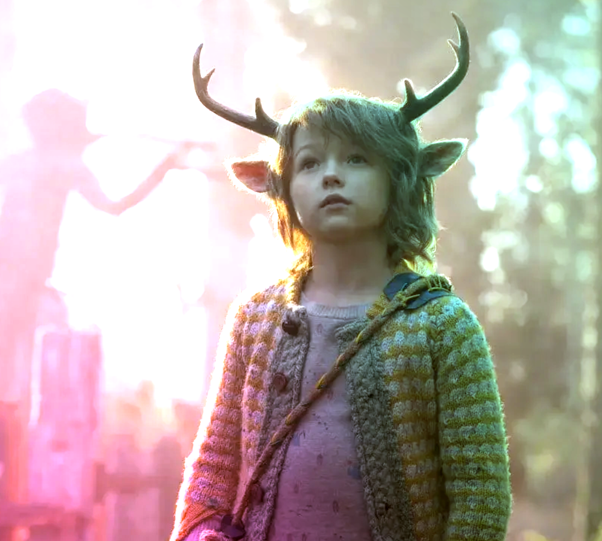

¿Se acuerdan cuando pensamos que la pandemia nos iba a hacer mejores? En 2020, el confinamiento global trajo consigo un discurso recurrente: saldríamos de esta crisis más solidarios, más conscientes, menos individualistas. La naturaleza se regeneraba, los cielos se despejaban y por un instante pareció que el capitalismo frenaba su marcha. Pero lo que vino después fue exactamente lo contrario: genocidios, guerras, hiperdesarrollo de grandes tecnológicas y una dependencia digital que nos atrapó más que nunca.

Sweet Tooth es, en su núcleo, una historia sobre ese mismo espejismo. Tanto en el cómic de DC Vertigo como en la serie de Netflix, el mundo colapsa por un virus letal y de sus cenizas nacen híbridos, niños mitad humanos mitad animales, que son perseguidos y exterminados por un orden militar que busca "restaurar" la normalidad. Pero la pregunta que subyace es: ¿qué normalidad? ¿La que existía antes del virus? ¿Esa que ya estaba enferma de desigualdad, extractivismo y violencia?
¿Quién decide qué mundo hay que salvar?
¿Quién define qué es un "mundo roto" y quién tiene el derecho de repararlo? ¿Vale la pena restaurar una humanidad eliminando a los híbridos, los mares y a las otras especies no humanas? ¿Qué es entonces reparar si deja medio mundo fuera? Gus, el niño ciervo, y sus compañeros híbridos representan otra forma de conocimiento: el de los cuerpos marginales, los que no encajan en el relato dominante y que, sin embargo, sobreviven, cooperan y construyen comunidades alternativas.
Nuestros pequeños amigos híbridos de la serie nos recuerdan que la evolución de las especies no es más que una historia narrada en millones de años. Con matices, idas y vueltas. No lineal. Gus y sus amigos tejen en la historia una supervivencia con otros. Una comunidad multiespecie, y sus cuerpos son la evidencia viva de que la vida no sigue las líneas puras que el pensamiento colonial, militar y capitalista quiere trazar. Son organismos que existen porque en algún momento hubo un encuentro, un afecto entre especies. Y esa existencia es, para el orden que quiere "restaurar la normalidad", una aberración que debe ser eliminada.

En su ensayo Involutionary Momentum Affective Ecologies and the Sciences of Plant/Insect Encounters (2012), Hustak y Myers leen "a contrapelo" la obra de Darwin. Las autoras cuestionan el relato dominante del evolucionismo y el neodarwinismo de los "genes egoístas", que aseguran su supervivencia mediante "una lógica economicista y militar". Lo que estos relatos hacen, sostienen, es borrar de la escena los cuerpos de los organismos presentes, sus sensaciones, juegos y placeres, y las prácticas que los hacen impensables sin estar enredados e involucrados afectivamente en las vidas de otros. Incluso cuando ese "otro" es de otras especies. "No tenemos que vivir en un mundo que luchamos contra otros, podemos crear un mundo en qué luchemos los unos por los otros", dijo el grandote y nos conquistó. No se trata de reparar lo viejo, sino de construir algo nuevo desde el reconocimiento de que cada mirada es un punto de vista situado que puede contribuir a un mundo más habitable.
¿Y qué rol tiene la ciencia en la construcción de un mundo que pondere la construcción multi especie? El "bien común" que esgrimen los poderes fácticos con el que las grandes tecnológicas justifican la generación de OGM que resistan un mundo cada vez más deteriorado, en pos de la erradicación de un hambre que no para de crecer. Al igual que en Sweet Tooth, los organismos no humanos son tratados como mercancías, como recursos biológicos que deben ser explotados o eliminados. La ciencia que aparece en la serie es una ciencia que separa, clasifica y extrae. Es la ciencia aquella que se presenta como neutral y universal, pero que en realidad encubre los intereses de quienes la producen (Haraway, 1988, p. 589). Esa ciencia no pregunta si los híbridos quieren ser salvados, si alterar el curso de la vida beneficia a los propios seres vivos que intenta salvar. Es una ciencia que asume que sabe qué es "salvar" y quién merece ser salvado.

Pero ¿Qué pasaría si la ciencia que enfrenta el colapso ambiental y social no fuera la de los OGM diseñados para resistir en monocultivos, sino que intenta entender cómo sostener cultivos dónde las especies coexisten? ¿Qué pasaría si en lugar de "reparar el mundo" o "generar un mundo mejor" la ciencia se ocupara de entender el que ya existe? Sweet Tooth nos propone otra lectura del mundo que nos rodea y otra ciencia. Una que contemple el encuentro entre humanos y no humanos. Una que no ve la evolución como una guerra de todos contra todos, sino como una danza de enredos, afectos y coevolución. Es una ciencia que se pregunta no por la 'utilidad' de una especie, sino por su intra-acción con el entorno (Barad, 2007, p. 33). Es una ciencia que, como los niños híbridos, aprende a leer el mundo a través del juego y la curiosidad, no a través del bisturí y la propiedad intelectual.
Esta bella historia nos propone la organización y la comunidad, aprender a vivir con nuestras heridas, a cuidarnos mutuamente desde nuestras miradas parciales y finitas. Nos muestra el mundo desde la mirada de un niño ciervo que ha aprendido a vivir con otros, no contra otros. Porque, como dicen Myers y Hustak, la (co)evolución no promete un final determinado, pero sí un presente que vale la pena habitar juntos. Un enredo fértil en el que seguir bailando, aunque el mundo se transforme.
Referencias
- Hustak, C., & Myers, N. (2012). Involutionary Momentum: Affective Ecologies and the Sciences of Plant/Insect Encounters. differences, 23(3), 74-118. https://doi.org/10.1215/10407391-1892907.
- Haraway, D. (1988). Situated Knowledges: The Science Question in Feminism and the Privilege of Partial Perspective. Feminist Studies, 14(3), 575-599.
- Barad, K. (2007). Meeting the Universe Halfway: Quantum Physics and the Entanglement of Matter and Meaning. Duke University Press.